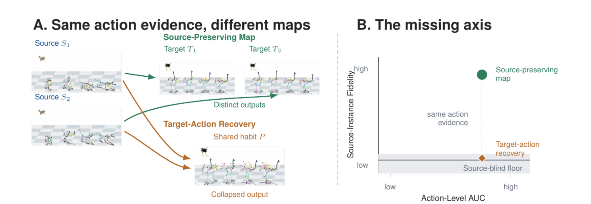
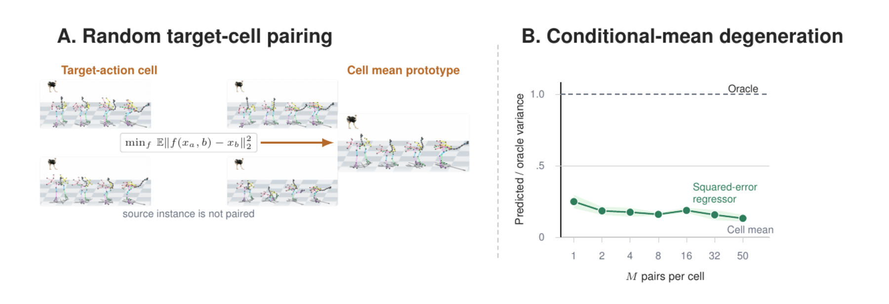
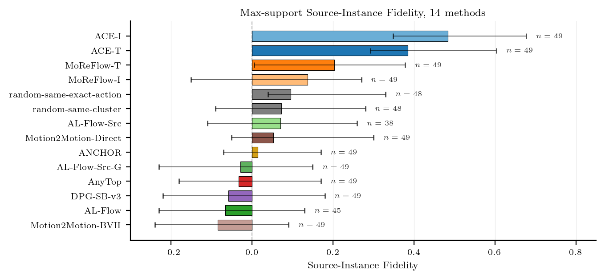
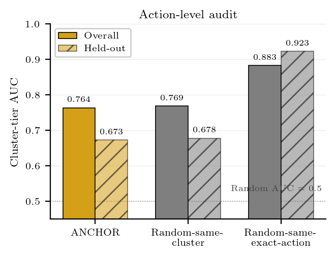
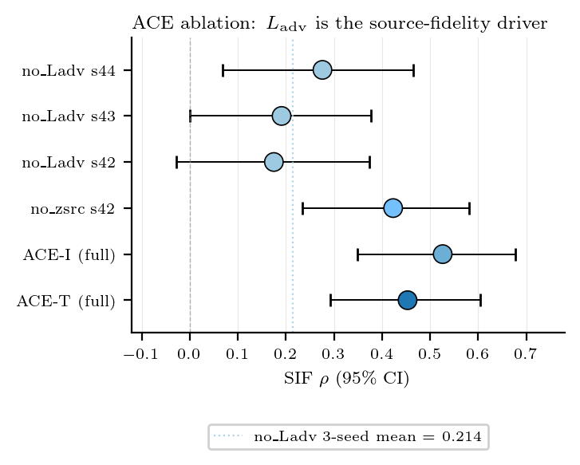
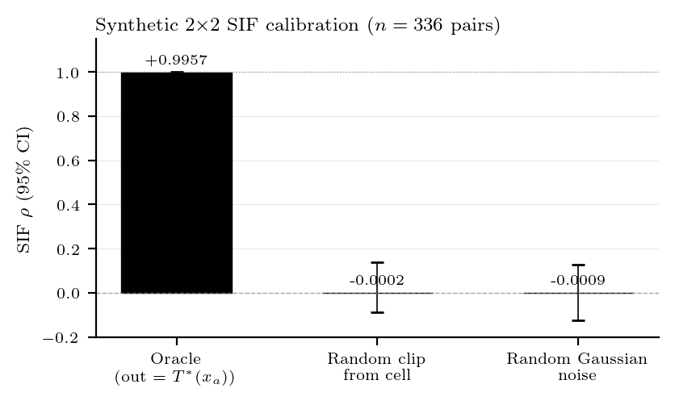
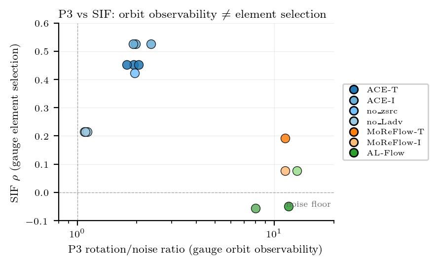

Gauge non-identifiability
Unpaired marginal matching leaves a relative gauge between skeleton-specific latent spaces, allowing distinct source-conditioned maps to induce the same training evidence.
NeurIPS 2026 submission
Structural Limits of Generative Motion Models
Action-consistent target motion can arise from source-preserving transfer or from target-action recovery. The standard score sees the action, but not the map that produced it.
Cross-skeleton motion generation trains generative models to carry action structure and source-specific dynamics from one body to another. A key challenge is understanding the mechanisms that govern these mappings, because action-consistent outputs are observationally equivalent, arising either from genuine source-preserving transfer or from degenerate target-action label recovery.
Through theoretical analysis and empirical evaluation, we show that the widespread failure to preserve source-specific motion is not a matter of model capacity, but a structural limit of standard generative objectives. Unpaired training admits a gauge ambiguity in the latent space, while sparse paired training degenerates toward a target-action prototype.
To audit these mechanisms, we introduce Source-Instance Fidelity, a diagnostic that asks whether source-instance geometry remains visible in target outputs after the target skeleton and action are fixed. The resulting evidence separates action-level success from true source-preserving transfer.
Main idea

Theory
Unpaired marginal matching leaves a relative gauge between skeleton-specific latent spaces, allowing distinct source-conditioned maps to induce the same training evidence.
Cell-paired squared-error regression under random target-cell pairing recovers a target-action prototype rather than the motion intention of the source clip.

Evidence
Source-Instance Fidelity measures whether changing the source clip produces a corresponding change in the generated target motion once the target skeleton and action are fixed.


Qualitative results
Side-by-side method outputs on representative cross-skeleton queries show that standard action-level success does not determine which source-conditioned map was learned.
These examples isolate outputs that satisfy the action request while losing the source clip's motion intention.
Diagnostics



Supplementary videos
Citation
This project page is prepared for anonymous review. Author and venue metadata will be updated after the review process.
@inproceedings{anonymous2026crossskeleton,
title = {Why Cross-Skeleton Retargeting Is Non-Identifiable:
Structural Limits of Generative Motion Models},
author = {Anonymous Authors},
booktitle = {Submitted to NeurIPS},
year = {2026}
}